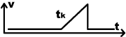
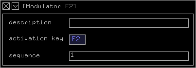

Global Modulator
The global modulator module has several purposes:
Modulator control
It's main purpose is to provide an easy way to control all
the modulators in your project. By
pressing it's activation key (ESCAPE by default), all
other modulators will be activated as well, so that subsequent
key-presses will be send to all modulators simultaniously. This
enables you, for example, to start and stop all modulators at
once or change the speed of the complete animation.
Mouse Values
The global modulator's two value out connectors enable
you to use the x or y position of the mouse as modulation values.
If the mouse is in the lower left corner of the screen their
output will be (0, 0). The mouse in the upper right corner will
generate (1, 1).
You may (temporarily) stop the generation of this values and/or
bind them to one or more modulators (see
below).
Texture Set
You define in the global modulator's inspector which
texture set will be used in the
current project.
Background
You may define a background color or image for your scene by
connecting attribute modules
to the global modulators attribute in connector.
Clear frame
You may also deactivate the clearing of the frame buffer (see
below).
value in connectors
| name |
description |
t
|
range
|
default |
| clear frame |
if deactivated, the frame buffer won't be cleared before
the scene is displayed |
b
|
yes, no
|
yes |
Modulator

Modulators provide the 'heart beats' of your animation:

The sawtooth curve above represents the continuously generated
values in the range [0,1] at a modulator's value
out connectors. You will use this values to change the attributes
of other modules by connecting to their value
in connectors.
Each modulator stores internally a list of numbers, called it's
sequence. The numbers in the sequence represent the duration
of each tooth in the sawtooth curve above. This enables modulators
to generate an irregular rhythm. For example, you could generate
the following curve with a sequence of [1, 2, 1, 3]:
The mathematical operation modules
provide more possibilities to change this curve.
Controlling Modulators
After activating a modulator by pressing it's activation key
(AK from now on), you may control the rhythm of it's 'heart
beat' in several ways:
The modulator control keys displayed above are the default. You
may change them in the preferences
window.
Modulator Status
Depending of the project, it may be difficult sometimes to keep
track of the current status of all the modulators. The status
line at the bottom of the sreen might help you in those cases.
For each module, a small 'meter' displays it's current value.
In case of the global modulator, which is always represented by
the leftmost meter, two values are displayed (mouse x and y values).
A dotted meter indicates an inactive and a solid line an active
modulator. Stopped modulators are displayed with a green and started
modulators with a red background. A blue meter bar indicates that
the modulator is bound to one of the mouse values.
For example, in the image above you see two groups of three deactivated
and three activated modulators. In each group, the first modulator
is stopped, the second and third modulators are playing while
the third modulator is bound to a mouse value.
Activating modulation > show status will display the
same information in textual form above the status line:
Trigger

In contrast to a modulator,
the trigger module provides a more interactive and less
automatic way to change your scene. After pressing it's activation
key, it generates a sequence of values between [0,1] as well,
but only once. It stays inactive afterwards (value 0) until you
press it's activation key again:

This curve depicts the output of a trigger module whose
activation key was pressed at time tk.
The duration of the slope is defined by the value at the modules
value in connector.
Activation Keys
You can change the activation keys of modulators and triggers
in their inspector. But let me point out something that might
confuse you:
The iput fields for activation keys are distinguishable
from normal input fields
by their gray background.

They behave a little bit different than input fields:
You are not able to edit their content in the same way you edit
normal input fields: The special keys and text selection doesn't
work (eg.  doesn't advance to the next input field and
doesn't advance to the next input field and  a
doesn't select the content). a
doesn't select the content).
The reason is: you can use the special function keys of normal
input fields as activation keys (even ).
Sounds strange, but it's not that complicated: for example, if
you want to activate a trigger by pressing a,
simply click in the input field, press
together with a and then .
One last note: You shouldn't use  and
modifiers for the activation key of modulators if you are
interested in changing their sequence in play mode (see
above).
and
modifiers for the activation key of modulators if you are
interested in changing their sequence in play mode (see
above).

|